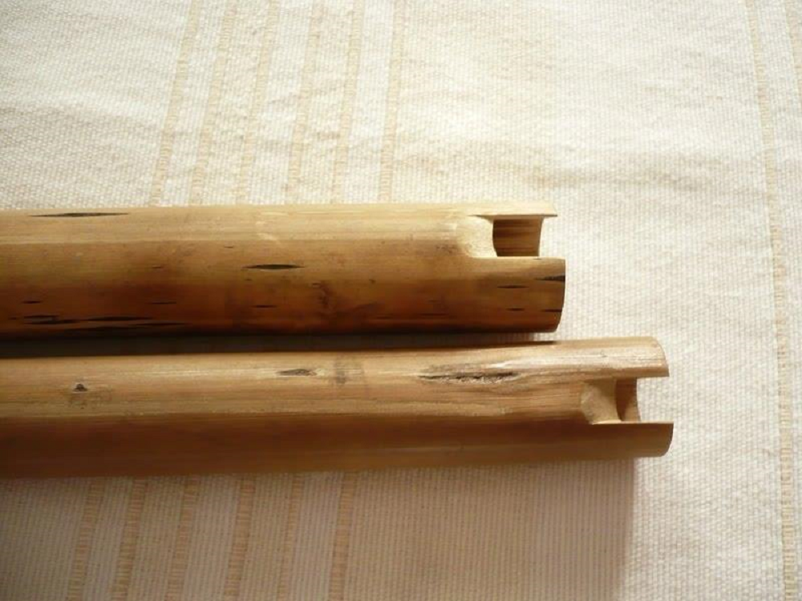

Quenas tradicionales
Apunte 016
Inicio > Blog Bitácora de un músico > Apunte 016
Antes de la flauta "estándar"
La llamada "quena estándar" —con seis orificios frontales, uno para el pulgar, afinación estable y proyección de concierto— es solo una rama de un ecosistema de flautas andinas mucho más antiguo y diverso.
Mucho antes de los intérpretes de conservatorio y los escenarios amplificados de los festivales, existían múltiples formas locales: pusipías, quena quenas, lichiguayos, qarwanis y otras cuyos nombres varían según la región y el idioma. Estas no son precursoras primitivas del instrumento moderno. Son sistemas paralelos con diferentes prioridades acústicas.
No buscan la claridad orquestal. Buscan fuerza, fusión y proyección al aire libre.
Con cuatro orificios no está incompleta
La pusipía —del aimara pusi (cuatro) y p'iya (orificio)— suele tener cuatro orificios para los dedos. Para un oído de conservatorio, esto parece limitado. Para un conjunto altiplánico, es estructuralmente suficiente. El rango tonal es secundario a la textura colectiva.
Estas flautas suelen utilizarse en conjuntos donde varios intérpretes se entrelazan o refuerzan sus centros modales. La afinación precisa y el temperamento son irrelevantes. Lo que importa es la afinación relativa dentro del grupo.
El error reside en juzgar la flauta por un repertorio para el que nunca fue diseñada.
Timbre antes que suavidad
Las quenas tradicionales suelen estar hechas de caña local en lugar de materiales industriales estandarizados. Sus orificios no siempre son regulares, y sus boquillas suelen ser rectangulares, anchas y rugosas. Estas características determinan la forma en que el instrumento requiere ser tocado: la embocadura a menudo exige una columna de aire más fuerte y directa, más cercana a un tajo que a una caricia.
Esta exigencia produce un tipo de sonido particular. El tono puede ser irregular, áspero, penetrante y rico en armónicos altos. Pero lo que puede parecer desigual en una habitación silenciosa cobra sentido al aire libre, donde la distancia, la altitud, el viento y el ruido ambiental rápidamente enmascaran los timbres más suaves. En ese entorno, un tono pulido no es algo automáticamente superior. El ataque brillante sobrevive porque tiene una función que cumplir.
La "dulzura" asociada a la quena de concierto moderna pertenece a una historia estética particular del instrumento. No debe confundirse con el sonido característico de todas las flautas andinas.
Más cercana a la tarka que a la flauta
Muchas quenas tradicionales comparten mayor afinidad estructural con las tarkas y ciertos pinkillos que con las flautas traveseras orquestales. La comparación resulta menos relevante a nivel de forma que a nivel de organización musical. Estos instrumentos suelen interpretarse en tropas: grupos de flautas relacionadas, generalmente construidas en dos o tres tamaños, que se combinan mediante movimientos paralelos, entradas entrelazadas y relaciones armónicas centradas en intervalos de cuarta y quinta.
En este contexto, la flauta no se concibe principalmente como un instrumento melódico solista. Pertenece a una masa sonora colectiva. Su valor reside en el volumen, el ataque, la fusión y el anclaje modal, más que en la flexibilidad cromática o la exhibición individual. Un solo instrumento puede parecer limitado cuando se escucha aislado, pero el sistema se vuelve inteligible al escucharlo como un conjunto.
Algunas de estas flautas se tocan estacionalmente. Algunas pertenecen a calendarios rituales específicos. Otras solo tienen pleno sentido musical en interpretaciones a dúo o en grupo. El instrumento rara vez es autónomo en el sentido virtuoso que posteriormente popularizaron los solistas del siglo XX y la música andina escenificada.
El recital de quena solista es un formato moderno. El mundo antiguo es el territorio del aerófono comunitario: hileras de respiración, tamaño, intervalo y fuerza que se mueven al unísono.
Estandarización como compresión
La estandarización de la quena en el siglo XX no se limitó a perfeccionar un instrumento antiguo. Lo reorganizó para que pudiera funcionar más como una flauta occidental: cromática, transponible, tocable individualmente en diferentes tonalidades y compatible con acompañamientos armónicos regidos por una altura fija.
Este cambio cobró especial importancia cuando los acordeones se incorporaron a los conjuntos campesinos andinos. A diferencia de las guitarras, los charangos o los violines, los acordeones no se pueden reafinar durante la interpretación. Su sistema de afinación se presenta como una arquitectura cerrada. Al principio, los intérpretes de quena tuvieron que responder llevando y utilizando varias flautas con diferentes afinaciones, cada una adecuada para una tonalidad o situación de conjunto particular. La carga de la adaptación recayó sobre el flautista.
La quena estandarizada moderna redujo esa carga. Al adoptar la disposición de la flauta de concierto actual, el intrumento pudo cambiar de tonalidad con mayor facilidad y participó en repertorios influenciados por la armonía occidental. Esto hizo que fuera más flexible en conjuntos mixtos.
La ventaja fue práctica, pero la limitación fue real. Una quena diseñada para cambiar de tonalidad bajo un régimen de afinación temperada resulta más fácil de enseñar, acompañar, grabar y difundir. Y, a la vez, otras formas de quena se vuelven más difíciles de apreciar por sí mismas: las afinaciones locales, los sistemas de orificios limitados, las relaciones de tono específicas de cada conjunto, los usos estacionales y las antiguas lógicas de tropa comienzan a parecer vestigios de un instrumento moderno supuestamente completo.
La estandarización no eliminó las quenas tradicionales. Simplemente enseñó a muchos oyentes a reconocer solo una de ellas como la quena.
Antes del virtuosismo
Los nombres que se invocan en el discurso moderno sobre la quena —Uña Ramos, Thevenot y otros— pertenecen a un poderoso linaje de música andina interpretada en directo y grabada. Este linaje es importante, pues hizo que la quena fuera visible para un público mucho más allá de sus contextos locales y la convirtió en una de las voces reconocibles de la música andina.
Pero la visibilidad tiene un precio cuando se convierte en genealogía.
El peligro no reside en la existencia de la quena moderna, sino en que se convierta en el instrumento con el que se comparan todas las demás. Una vez que esto sucede, cuatro agujeros parecen insuficientes, un timbre áspero suena defectuoso, la afinación local se convierte en imprecisión, y la lógica del conjunto desaparece tras la imagen del solista.
Las quenas tradicionales requieren una escucha diferente. No necesitan ser rescatadas por el instrumento de concierto, explicadas como sus antecesoras ni adaptadas a su sistema de afinación. Pertenecen a universos sonoros donde la respiración es colectiva, el tono es relacional y la fuerza importa tanto como la dulzura.
No todas las flautas están hechas para destacar por encima de las demás. Algunas están hechas para integrarse en la masa sonora, mantener su lugar y cortar el aire al unísono.
Lecturas
- Baumann, Max Peter. 1982. Music of the Indios in Bolivia. The World of Music, 24 (2), pp. 80-98.
- Bolaños, César, et al. 1978. Mapa de los instrumentos musicales de uso popular en el Perú. Lima: Instituto Nacional de Cultura. 0
- Cavour Aramayo, Ernesto. 1994. Instrumentos musicales de Bolivia. La Paz: Producciones Cima.
- Romero Vila, Mayolo. 2021. La evolución de la quena desde los años 80 hasta la actualidad. Monografía de pregrado, Universidad Nacional de Educación Enrique Guzmán y Valle, Lima.
Video. Del usuario de YouTube Chalena Vásquez.